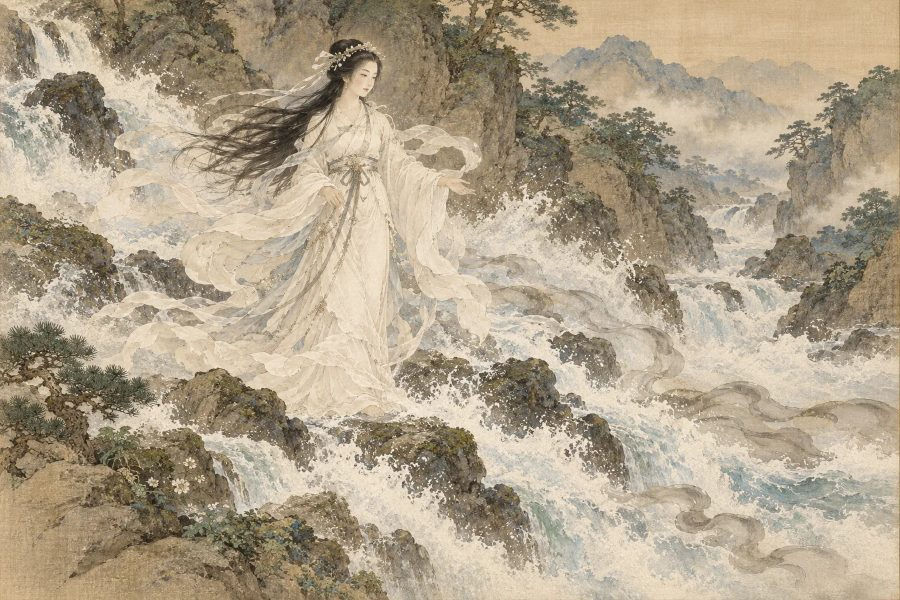

日本の信仰・神
瀬織津姫
「川の流れで罪穢れを祓う女神」
⛩️ あなたの正体も診断する（無料）本質
神道の祝詞「大祓詞」に登場し、激しい川の流れで人々の罪や穢れを海へと押し流す女神。祓い清めの力を持ち、各地の神社で祀られています。心のもやもやを流し去ってくれる人です。
- ✨ 長所
- そばにいると気持ちがすっと軽くなる、浄化の力があります。過去を引きずらない潔さもあります。
- ⚠️ 短所
- 流れに任せすぎて、大事なものまで手放してしまうことも。
- 💞 恋愛・人間関係
- 相手のわだかまりを溶かす、やさしくさっぱりした恋人です。
- 💼 仕事・才能
- セラピー、清掃・浄化に関わる仕事、カウンセリング、水に関わる仕事に向いています。
📍 ゆかりの地：佐久奈度神社（滋賀県大津市）